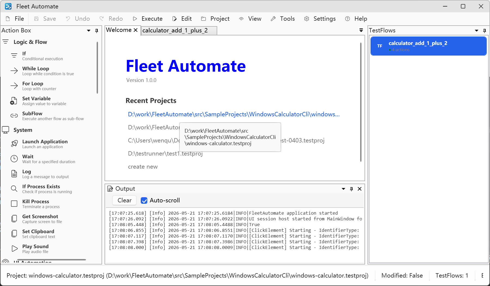
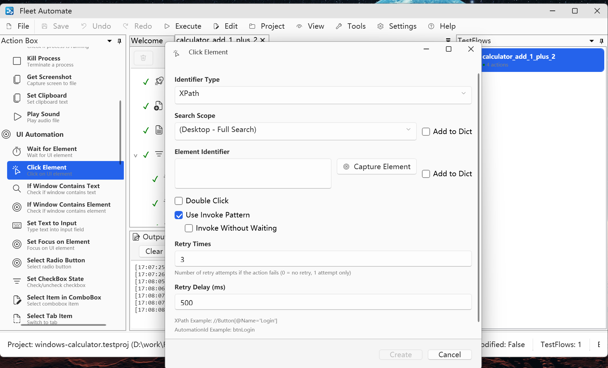

Compose TestFlows visually
Drag automation, system, logic, and flow-control actions into ordered TestFlows without writing glue code.
WYSIWYG automation for Windows apps
Fleet Automate helps you create repeatable desktop automation TestFlows with a visual action box, structured flow editor, UI element capture, live execution state, and inspectable logs.

Why Fleet Automate
Design flows from reusable actions, configure each step with focused dialogs, and watch execution state update directly in the UI.
Drag automation, system, logic, and flow-control actions into ordered TestFlows without writing glue code.
Use built-in element capture to identify windows, buttons, inputs, and other controls from running apps.
Follow action state, output logs, pause/resume behavior, and flow results from the same workspace.
Projects and TestFlows are file-based, making them easy to inspect, version, copy, and share.
From idea to execution
Each action exposes the properties that matter: identifier type, search scope, retry behavior, invoke mode, and dictionary options. The goal is fast setup with fewer hidden assumptions.

AI-ready CLI automation
Fleet Automate includes CLI capabilities designed for the AI Agent era. An agent can create or modify TestFlows, run automation, inspect results, and iterate on fixes while the UI remains observable for humans.
Agents can create projects, add flows, insert actions, and update action properties from command line calls.
Flows can be prepared by CLI and observed in the desktop UI through UI-hosted command sessions.
Structured output includes execution mode, payloads, and errors, making it easier for agents to reason about failures.
Agents can refine selectors, update action settings, save projects, and repeat until the TestFlow passes.
The CLI routes commands to an open Fleet Automate UI session when a matching project is available. If no UI session is found, it falls back to offline file mode and writes directly to project files.
mode as ui-session or offline.fleetctl testproj show --project D:\demo\sample.testproj
fleetctl testproj create --project D:\demo\sample.testproj --name SampleProject
fleetctl testflow create --project D:\demo\sample.testproj --name calculator_flow
fleetctl testflow tree --project D:\demo\sample.testproj --flow calculator_flow
fleetctl action add --project D:\demo\sample.testproj --flow calculator_flow --type LaunchApplicationAction
fleetctl action set --project D:\demo\sample.testproj --flow calculator_flow --path 0 --property ExecutablePath --value calc.exe
fleetctl action show --project D:\demo\sample.testproj --flow calculator_flow --path 0 --format json
fleetctl project save --project D:\demo\sample.testprojCompanion CLI tool
winauto-cli is a Python CLI wrapper around pywinauto for Windows desktop automation.
It gives agents a command surface for inspection, interaction, validation, screenshots, and path-oriented selector refinement.
PyPI describes commands such as list-windows, find, inspect,
act, assert, and screenshot. It requires Python 3.10+.
pip install winauto-cli
Open PyPI page
Workflow
Capture or type element identifiers and keep reusable targets in project dictionaries.
Combine clicks, waits, conditions, loops, logs, variables, and system actions into a readable flow.
Watch completion state, output logs, retries, and pause/resume behavior without losing context.

Calculator demo
The calculator sample demonstrates a complete UI automation flow: locate the app, invoke buttons, wait for expected UI, and record execution progress.
Screenshots

Getting started
Install Fleet Automate 0.1.0 for Windows x64:
website/releases/FleetAutomate-0.1.0-setup.exe
Build the desktop application:
dotnet build src/FleetAutomate.Application/FleetAutomate.csproj
Then open a sample project from:
src/SampleProjects/WindowsCalculatorCli/windows-calculator.testproj
Ready to automate?
Clone the repository, open the sample project, and inspect a working TestFlow end to end.